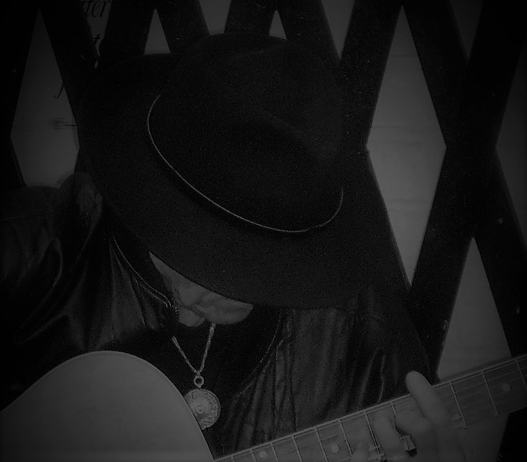
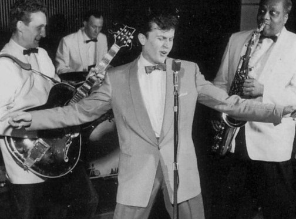

ONE OF THE BEST VOICES OF HIS TIME
BECAUSE LIFE IS ABOUT MUSIC
RENEWAL IS THE KEY
Regarded as the British Elvis, Terry Dene was the first real British rocker of the late 50s and is still recognised as one of the best voices of the British Rock’n’Roll era.
A rebel, a crossbreed between sacred and profane his first record ‘A White Sport Coat’ sold in excess of 350,000 copies in the first 7 weeks and together with ‘Stairway of Love’, in the charts for 8 weeks running and ‘Start Movin’ at no 14, put his records in the top 20 twice in the same year and secured his name in the British pop history and the Guinness Book of Records.
Discovered in the 2 Is coffee bar in the trendy Soho of the late 50s he starred himself in the British film ‘The Golden Disc’ based on his rise to fame, where C’min and Be Loved, Candy Floss, Charm and the Golden Age were launched.
He was one of the first to appear on the 6.5 Special, the first British pop TV series in 1957.